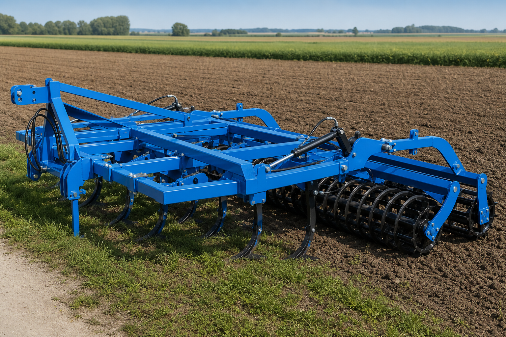

Louky a univerzální kultivace
GLH a Opticult
Dvě specializované řady pro rozdílné práce. GLH hluboce kypří půdu pod travním drnem bez jeho roztrhání, zatímco Opticult připravuje seťové lůžko a pracuje při mělkém zpracování strniště.
2,5–6,0 m80–200 khloubka 15 až 55 cm

Luční hloubkový kypřič
GLH
Pracovní jednotka nejprve nařízne drn, slupice nakypří půdu pod povrchem a dělený prizmatický válec louku opět urovná a zpevní.
| Model | Záběr | Hmotnost* | Slupice | Výkon traktoru | Výkonnost | Pracovní hloubka |
|---|---|---|---|---|---|---|
| GLH 250 | 2,5 m | 1 350 kg | 3 | 90–120 k | 2,0 ha/h | 35–55 cm |
| GLH 300 | 3,0 m | 1 800 kg | 4 | 110–160 k | 2,4 ha/h | 35–55 cm |
| GLH 350 | 3,5 m | 1 900 kg | 5 | 130–200 k | 2,8 ha/h | 35–55 cm |
* Hmotnost je orientační a mění se podle zvolené výbavy a konfigurace.
Univerzální kultivátor
Opticult
Čtyři řady pružných zubů 70 × 12 mm s přímou radličkou nebo husí nohou a trubkový válec Ø 500 mm.
| Model | Záběr | Hmotnost* | Zuby | Výkon traktoru | Výkonnost | Max. hloubka |
|---|---|---|---|---|---|---|
| Opticult 300 | 3,0 m | 3 760 kg | 21 | 80–120 k | 2,0–4,0 ha/h | 15 cm |
| Opticult 400 | 4,0 m | 3 060 kg | 27 | 100–140 k | 2,9–5,0 ha/h | 15 cm |
| Opticult 500 | 5,0 m | 3 360 kg | 33 | 120–160 k | 3,6–6,2 ha/h | 15 cm |
| Opticult 600 | 6,0 m | 3 660 kg | 39 | 160–200 k | 4,5–7,5 ha/h | 15 cm |
* Hmotnosti jsou převzaty z aktuálně zveřejněné tabulky výrobce a mohou se lišit podle výbavy a konfigurace.
Konstrukce GLH
Hloubkové kypření bez poškození drnu
- Hydraulické jištění slupic a pružinové jištění řezných talířů
- Pracovní orgán šířky 120 mm a hydraulické nastavení hloubky
- Modulární pracovní jednotky s nastavitelnou roztečí a třemi typy nástrojů
- Dělený prizmatický válec pro závěrečné urovnání a zpevnění povrchu
- Volitelný podest pro secí stroj meziplodin, LED osvětlení a asymetrické dláto
Výběr podle práce
GLH pro louku, Opticult pro pole
Napište nám typ pozemku, výkon traktoru, požadovaný záběr a pracovní hloubku. Prověříme vhodný model i doplňkovou výbavu.